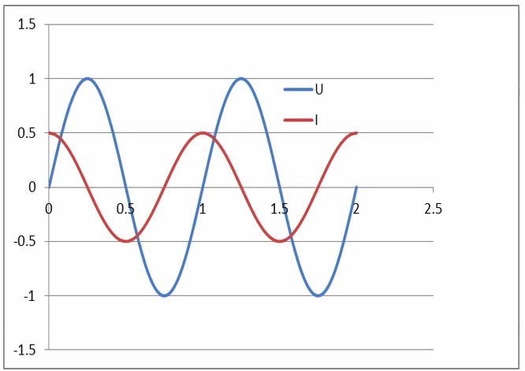
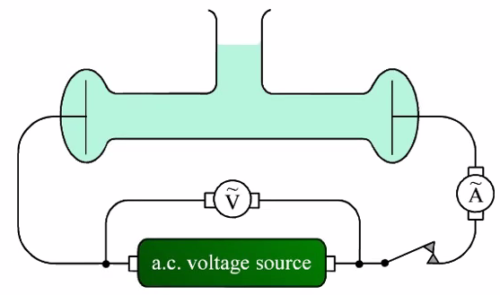
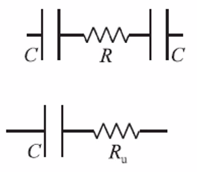
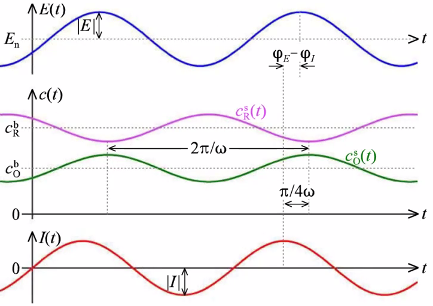
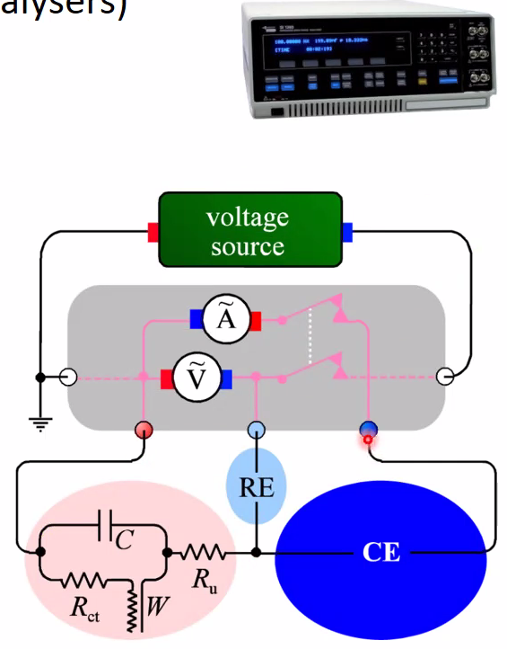
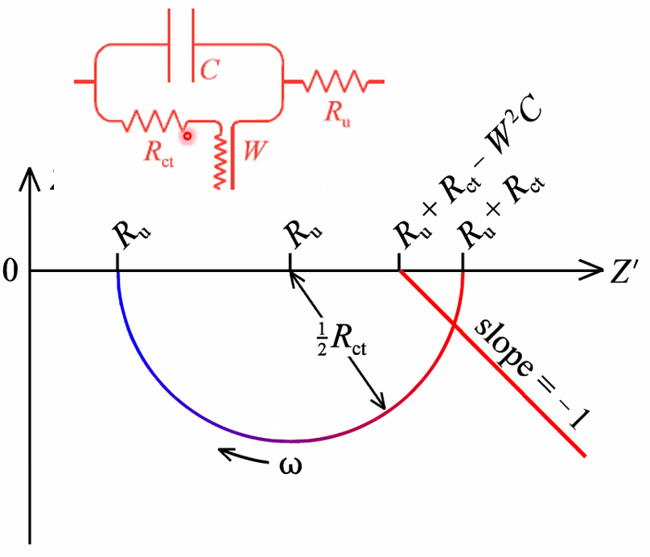
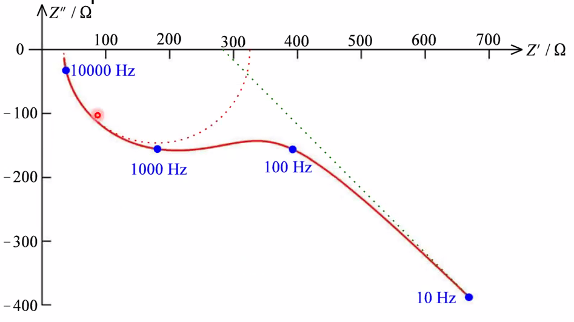

Electrochemistry with Periodic Signals
AC Voltage and current
AC:
- U = U\(_0\)sin\(\omega\)t
Amplitude:
- U\(_0\)
- peak to peak voltage U\(_{p-p}\) = 2U\(_0\)
- RMS: U\(_{rms}\) = U\(_0\)/\(\sqrt{2}\)

Resulting AC current can have different amplitude because of impedance:
- \(I=I_{0} \sin (\omega t+\theta)\)
Preiodicity: \(E(t+P)=E(t)\)
Sinusiodal case:
- \(\Delta E(t)=|E| \sin \left\{\omega t+\varphi_{E}\right\}\)
- \(I(t)=|I| \sin \left\{\omega t+\varphi_{I}\right\}\)
Angular frequency is \(\omega=2 \pi f\)
Phase angle is \(\varphi\)
What is the periodicity P? Maybe peak to peak, known as \(2\pi\)
Conductivity cell

- Calibrate geometrical factors by using 1M KCl sol: \(\kappa=\frac{L}{A R}=\frac{L|I|}{A|E|}\)
- AC measurement: Current \(I(t)=|I| \sin \left\{\omega t+\varphi_{I}\right\}\)
- Will generate voltages over an electrochemical cell
- 
- Over R: \(E_{R}(t)=R_{\mathrm{u}} I(t)=R_{\mathrm{u}}|I| \sin \left\{\omega t+\varphi_{I}\right\}\)
- Over C: \(E_{C}(t)=\frac{Q(t)}{C}=\frac{1}{C} \int|I| \sin \left\{\omega t+\varphi_{I}\right\} \mathrm{d} t=\frac{|I|}{\omega C} \cos \left\{\omega t+\varphi_{I}\right\}=\frac{|I|}{\omega C} \sin \left\{\omega t+\varphi_{I}+\frac{\pi}{2}\right\}\)
Faradaic effects of AC, Impedance
- The aim of this subsection is to show that there is two contributions to electrode impedance: Kinetics and Transport
- Apply AC current, measure AC voltage, or vice versa
- Impedance Z (= R in DC) > = |E|/|I|
- Faradaic effects:
- Apply (small) AC voltage \(\Delta E(t)=|E| \sin \left\{\omega t+\varphi_{E}\right\}\)
- Reaction \(\mathrm{R}(\) soln \() \rightleftarrows \mathrm{e}^{-}+\mathrm{O}(\) soln \()\)
- Response on concentrations \(c_{\mathrm{i}}^{\mathrm{s}}(t)=c_{\mathrm{i}}^{\mathrm{b}}+\left|c_{\mathrm{i}}^{\mathrm{s}}\right| \sin \left\{\omega t+\varphi_{\mathrm{i}}^{\mathrm{s}}\right\} \quad \mathrm{i}=\mathrm{R}, \mathrm{O}\)
- Oscillating current changes the concentrations of reactants and products:
- \(c_{\mathrm{R}}^{\mathrm{s}}(t)=c_{\mathrm{R}}^{\mathrm{b}}-\frac{|I| \sin \left\{\omega t+\varphi_{I}-\pi / 4\right\}}{F A \sqrt{D_{\mathrm{R}} \omega}} ; \quad c_{\mathrm{O}}^{\mathrm{s}}(t)=c_{\mathrm{O}}^{\mathrm{b}}+\frac{|I| \sin \left\{\omega t+\varphi_{I}-\pi / 4\right\}}{F A \sqrt{D_{\mathrm{O}} \omega}}\)
- \(\frac{c_{\mathrm{R}}^{\mathrm{s}}(t)}{c_{\mathrm{R}}^{\mathrm{b}}}=1-\frac{\left|c_{\mathrm{R}}^{\mathrm{s}}\right|}{c_{\mathrm{R}}^{\mathrm{b}}} \sin \left\{\omega t+\varphi_{I}-\pi / 4\right\} ; \quad \frac{c_{\mathrm{O}}^{\mathrm{s}}(t)}{c_{\mathrm{O}}^{\mathrm{b}}}=1+\frac{\left|c_{\mathrm{O}}^{\mathrm{s}}\right|}{c_{\mathrm{O}}^{\mathrm{b}}} \sin \left\{\omega t+\varphi_{I}-\pi / 4\right\}\)
- Product and reactant concentrations are shifted -45 deg and +135 deg respectively, 180 deg apart.
- 
- \(\frac{R T}{F A i_{\mathrm{n}}}=\frac{R T}{F^{2} A k^{0 \prime}\left(c_{\mathrm{R}}^{\mathrm{b}}\right)^{\alpha}\left(c_{\mathrm{O}}^{\mathrm{b}}\right)^{1-\alpha}}=R_{\mathrm{ct}}\) charge-transfer resistor
- \(\frac{R T \sqrt{\omega}}{F|I|}\left(\frac{\left|c_{\mathrm{R}}^{\mathrm{s}}\right|}{c_{\mathrm{R}}^{\mathrm{b}}}+\frac{\left|c_{\mathrm{O}}^{\mathrm{s}}\right|}{c_{\mathrm{O}}^{\mathrm{b}}}\right)=\frac{R T}{F^{2} A}\left(\frac{1}{c_{\mathrm{R}}^{\mathrm{b}} \sqrt{D_{\mathrm{R}}}}+\frac{1}{c_{\mathrm{O}}^{\mathrm{b}} \sqrt{D_{\mathrm{O}}}}\right)= W\) Warburg element
- W has units of Ohms s\(^{-1/2}\)
- Reflects a combination of Diffusion and Chemical capacitance
- Appears in AC circuits
- Imposes complex impedance Z_{\mathrm{W}}(\mathrm{ohm})=W / \mathrm{V}(2 \omega)-\mathrm{j} W / \mathrm{V}(2 \omega)
- Has a constant, frequency independed phase shift of \(-\pi / 4\left(-45^{\circ}\right)\)
- Revesibility index \(\lambda\)
- \(\lambda=\frac{W}{R_{\mathrm{ct}} \sqrt{\omega}}=\frac{k^{\circ}}{\sqrt{\omega}}\left[\frac{1}{\sqrt{D_{\mathrm{R}}}}\left(\frac{c_{\mathrm{O}}^{\mathrm{b}}}{c_{\mathrm{R}}^{\mathrm{b}}}\right)^{1-\alpha}+\frac{1}{\sqrt{D_{\mathrm{O}}}}\left(\frac{c_{\mathrm{R}}^{\mathrm{b}}}{c_{\mathrm{O}}^{\mathrm{b}}}\right)^{\alpha}\right]\)
- Reversible: R\(_{ct}\) very small, \(\lambda >> 1\)
- Quasireversible: \(\lambda \approx 1\)
- Irreversible: R\(_{ct}\) large, \(\lambda << 1\), No Faradaic periodicity
Impedance spectrometer

- 0-3V rms AC 0.01mHz-32MHz, -42 - +42 V DC
- Electrode electrical elements:
- R\(_u\) uncompensated electrolyte resistance (ohmic)
- R\(_{ct}\) Charge transfer resistance (kinetics)
- W Warburg impedance (diffusion)
- C Capacitance (double layers)
The Z semicircle (RC)

